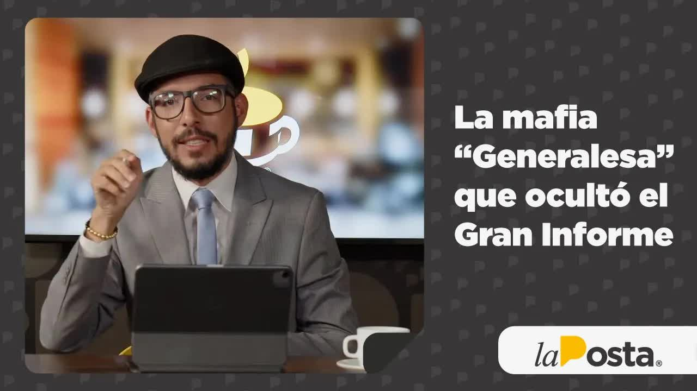
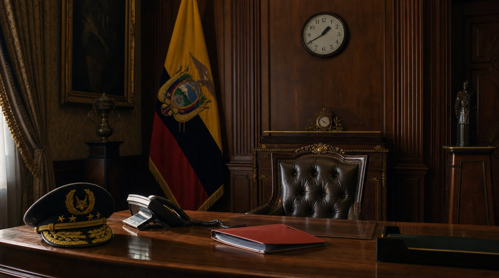
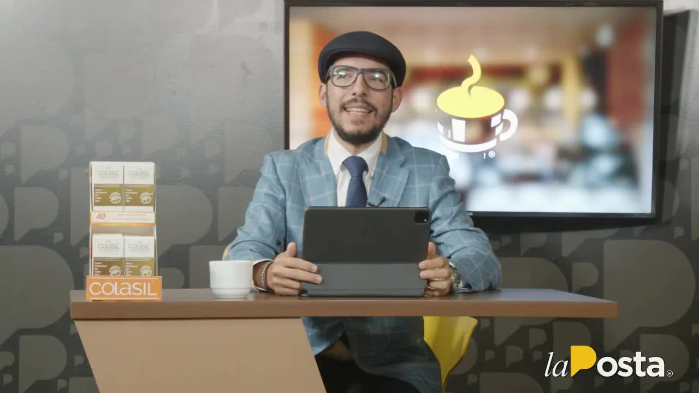
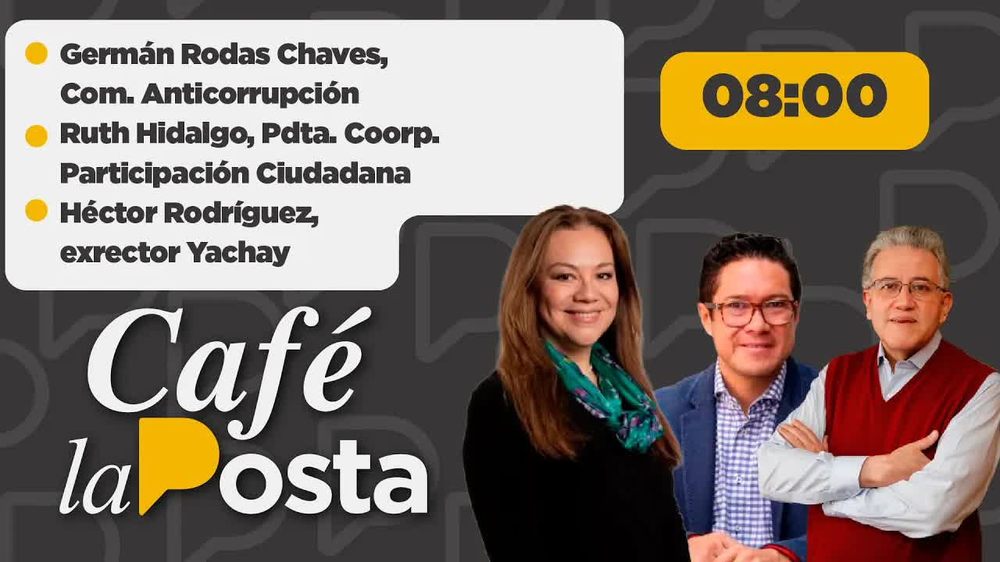
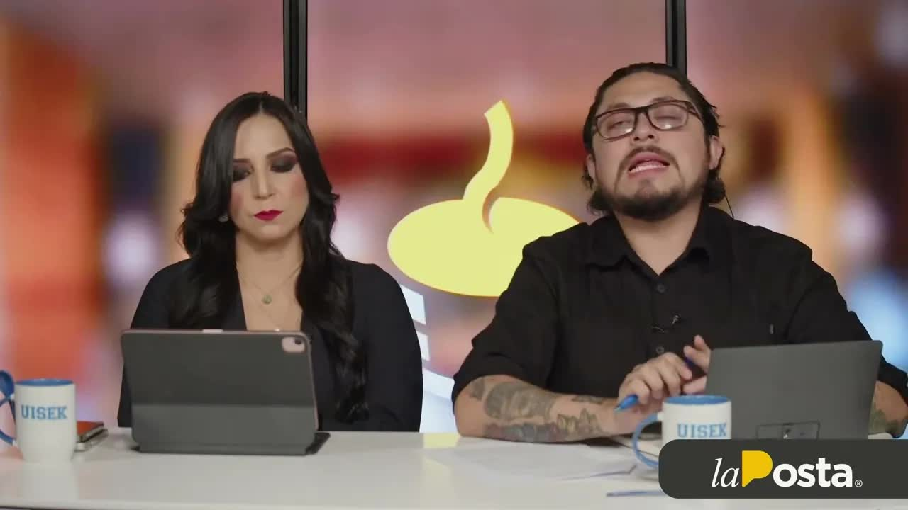
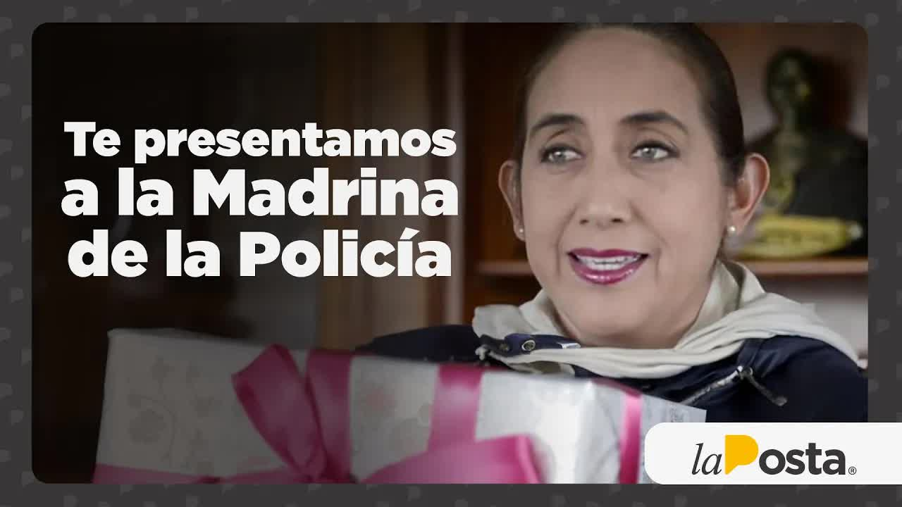
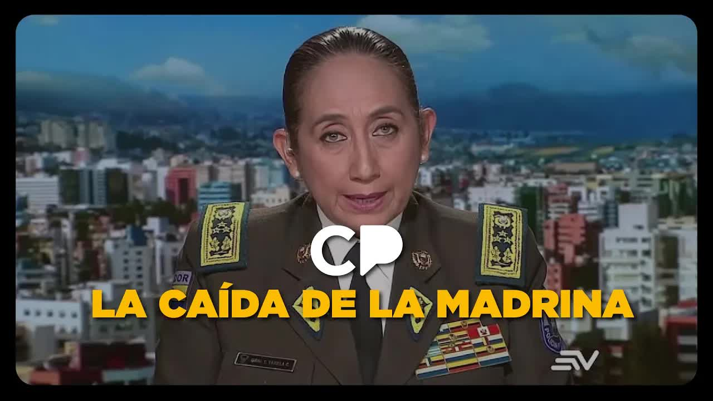

22 feb 2023 · El Punto Final: la mafia generalesa
En diciembre de 2021 el embajador de Estados Unidos dijo que en Ecuador había narcogenerales y cuatro perdieron la visa. Un año después La Posta recibió el informe León de Troya: la Policía había interceptado a la mafia albanesa y encontró al cuñado del presidente hablando con su operador. El caso se cerró. En marzo de 2023 los generales Giovanni Ponce y Mauro Vargas se escucharon en audio dando la orden de cerrarlo, y la comandante general Tannya Varela contó que había ido a Carondelet y que el presidente ya había hablado con su cuñado. Los narcos la llamaban la madrina. En diciembre de 2025 fue detenida junto con los dos policías que investigaron.

La palabra la puso el embajador de Estados Unidos. En diciembre de 2021 Michael Fitzpatrick dijo en una entrevista que en Ecuador había narcogenerales y que se retirarían visas. A los cinco días, cuatro generales perdieron la visa americana. El 20 de diciembre, en Café la Posta, Andersson Boscán lo resumió así: que el narcotráfico había llegado a la cúpula de la Policía era algo de lo que no había pruebas pero tampoco dudas; ahora había la certeza que aportaba la embajada. Ese fin de semana el periodista Paúl Romero, de Ecuavisa, había sacado de la página de la Contraloría las declaraciones patrimoniales de los generales. Boscán las puso en pantalla: la comandante general Tannya Varela, 872.000 dólares en bienes y una deuda de 440.000; el general Ramiro Ortega, 631.000; el general Vargas, de Inteligencia, 625.000; el general Villegas, 585.000; el general Fausto Salinas, 1.136.141 dólares. Hizo el ejercicio de sumar veinte años de sueldos en la escala policial sin gastar un centavo y no le dio. Mauricio Alarcón, de Fundación Ciudadanía y Desarrollo, pidió que la embajada diera los nombres, como en Centroamérica, y que la Contraloría cruzara esas declaraciones con el sistema financiero.
El invitado de cierre fue Felipe Rodríguez, abogado penalista, que se presentó como el defensor de Varela en el caso penal por falsedad ideológica. Lo que estaba en juego era la guerra interna de los generales. La comandante había calificado en julio de 2021, junto con el ministro de Gobierno César Monge, a cuatro generales que salieron de la institución: Víctor Araus, Correa, Terán y Rodríguez. Araus la acusó de haber inventado la reunión de calificación; una jueza de garantías penales, actuando como constitucional, ordenó reintegrarlos. Rodríguez dijo que la reunión existió por WhatsApp, que pediría una pericia del teléfono de Varela, que la embajada había avisado extraoficialmente al Gobierno y a la comandante de sospechas sobre esos cuatro generales, y que el patrimonio era de la sociedad conyugal con su esposo, el general Noguera. Contó que Lasso se había llevado a Varela a una reunión en Cartagena como voto de confianza. Boscán le respondió que lo complicado era que cada semana se daban más nombres de generales sin visa. El 23 de febrero de 2022, otra vez Fitzpatrick: la Policía, la Fiscalía y los jueces tenían la información en sus manos y debían preparar bien los informes. En el programa, Germán Rodas, de la Comisión Nacional Anticorrupción, habló de desidia.
Que el narcotráfico ha llegado a la cúpula es algo de lo que no teníamos pruebas, pero no teníamos dudas. Hoy tenemos la certeza que aporta la embajada americana.
Andersson Boscán, 20 de diciembre de 2021
Cuatro años después la historia de los narcogenerales tendría otra lectura, contada en el mismo programa. En diciembre de 2025 Ricardo Vanegas, exasambleísta del Frente Parlamentario Anticorrupción, dijo que el informe con el que el embajador habló por primera vez de narcogenerales lo había escrito personalmente Varela, a partir de una conversación grabada entre Araus y Rubén Cherres en la que el general se promocionaba como próximo comandante, y que sirvió para sacar del camino a los cuatro que estaban antes de su esposo en la línea de ascensos. Lasso los mandó a la casa, Noguera ascendió. Boscán agregó que en las conversaciones no publicadas se ordena divulgar que Araus tiene relaciones con el narcotráfico, que el informe se entrega a la embajada y que la embajada pica el anzuelo. El tiempo, dijo, le dio la razón a Araus.
León de Troya empezó en mayo de 2021. Una alerta del 21 de mayo puso a la Policía detrás de Rubén Cherres Fayoni y de un albanés. Con órdenes judiciales, un equipo dirigido por el teniente coronel José Luis Erazo interceptó más de diez mil llamadas: encontró narcoavionetas aterrizando en Ecuador, envíos positivos de droga a Europa y Estados Unidos, reuniones en Manta y en un edificio de Samborondón, y a Cherres hablando con políticos del Gobierno y con Danilo Carrera, cuñado del presidente, que abogaba por cargos y ascensos. El informe final tiene 145 páginas. Se archivó a comienzos de 2022 y se declaró reservado. A fines de 2022 llegó a manos de Boscán y Velásquez, que vivían entonces en una habitación de hotel con sus hijas porque su equipo de seguridad había detectado una amenaza en su casa. El 13 de febrero de 2023 Boscán compareció ante la Comisión de Fiscalización de la Asamblea con El Gran Informe: el financiamiento de la campaña de Lasso con 1,5 millones de dólares en mascarillas e insumos médicos, el ministro de Agricultura Bernardo Manzano entregando su currículum a los operadores, Carrera gestionando cargos delante del presidente. Y dijo quién había cerrado la investigación.
Uno de los primeros que tendrá que responder ante esta comisión y ante el país es quien dirigía Antinarcóticos a la fecha. Hablo del general Giovanni Ponce. Fue él quien ordenó el cierre de este caso.
Andersson Boscán ante la Comisión de Fiscalización, 13 de febrero de 2023
Los nombres fueron tres. Giovanni Ponce, director antinarcóticos, a quien el exministro Patricio Carrillo había declarado el mejor general antinarcóticos de la historia. Mauro Vargas, director de Inteligencia, que recibió una presentación del caso; Boscán dijo tener copia. Y la comandante general Tannya Varela, que el 7 de julio de 2021, a las 13:40, entró al Palacio de Carondelet con el teniente coronel Erazo sin registrarse en la bitácora de la puerta principal, según inteligencia militar, autorizada por el entonces coronel Ponce, encargado de comunicaciones. El Gobierno respondió el mismo día con un comunicado: el informe fue archivado por decisión de la Fiscalía y validado por un juez porque no había méritos. Al día siguiente Lasso dedicó una cadena nacional: abuso es publicar un informe reservado omitiendo que fue desestimado por la Fiscalía y archivado por orden judicial hace casi un año. El ministro de Gobierno, Henry Cucalón, vino al programa y repitió que la motivación para archivar y para reabrir le competía a la Fiscalía. El secretario de Seguridad, Diego Ordóñez, dijo que no había suficiente evidencia.
Dirige el equipo de León de Troya. Alerta del 21 de mayo de 2021 sobre Cherres y un albanés; escuchas judiciales; en junio llega al despacho de la comandante con la relación entre Danilo Carrera y Rubén Cherres
Pide estar al tanto. Cuando los reportes no llegan, porque los mafiosos hablan de la generala, exige que la informen. Pide cita en Carondelet
7 de julio de 2021, 13:40. Recibe a Varela y a Erazo sin bitácora. Ve los diagramas, dicta el número de su cuñado. Según Varela, llama a Danilo Carrera: ya no va a hablar
Días después de la advertencia, según el equipo, todos los blancos cambian de número telefónico, narcotraficantes incluidos
Director antinarcóticos. Ante el equipo: hay que cerrar y abrir otra IP sin lo de Danilo ni lo del presidente. Dispone el pase de Erazo y disuelve la unidad
Director de Inteligencia. Recibe una presentación del caso. Sí, sí, hay que cerrar: mañana le va a afectar al presidente
21 de diciembre de 2021. Firma el oficio que pide al fiscal el cierre de la investigación previa porque los investigados estarían fuera del país
Diecisiete días después archivan la causa y la declaran reservada. Nadie ha dicho quién les dio la orden desde Quito
Recibe el informe de 145 páginas a fines de 2022. 13 de febrero de 2023: El Gran Informe en la Asamblea. 14 de marzo: los audios
La Posta mostró el documento que desmentía al Gobierno. Con fecha 21 de diciembre de 2021, diecisiete días antes del cierre formal, el teniente Cristian Moya firmó un oficio en el que solicitaba al fiscal, de ser factible, el cierre de la investigación previa porque los ciudadanos que formarían parte de la organización se encontrarían fuera del país y no se habían obtenido elementos de convicción. Era falso, y la Policía no pide cerrar los casos que ella misma investiga. Una semana después de la comparecencia, Fernando Villavicencio, desde el Frente Parlamentario Anticorrupción, confirmó con un documento firmado por Ponce el desmantelamiento del equipo de Erazo y pidió que la Fiscalía investigara por qué la comandante y el jefe antinarcóticos disolvieron una unidad que investigaba uno de los mayores casos de tráfico a Europa, con Europol, la policía británica y la DEA. La Fiscalía reabrió la investigación. Ponce y Vargas no fueron a la Asamblea: la Policía emitió un comunicado, firmado por el comandante Fausto Salinas, diciendo que sus miembros no son sujetos de control político y que la institución no dispuso el cierre.

El 22 de febrero de 2023, en El Punto Final, Boscán les puso nombre: mientras las denuncias de amenazas hablaban de la mafia albanesa, él quería mirar a la mafia más peligrosa, la mafia generalesa. Vargas, dijo, en vez de advertir si el narcotráfico contaminaba la Policía, hacía campaña con troles y convencía al ministro Ordóñez de cambiar la cúpula de las Fuerzas Armadas. Ponce, despedido por Lasso en cadena nacional tras el crimen de María Belén Bernal en la Escuela de Policía, seguía de general y premiado con la dirección de los aeropuertos. El ministro del Interior, Juan Zapata, había pedido desde el primer día que los retiraran; el presidente no lo hizo. Por qué los generales quieren información, cerró: no para hacer su trabajo, sino para tener a los políticos agarrados.
El 14 de marzo de 2023, un mes y un día después de El Gran Informe, La Posta puso al aire las voces. Una fuente policial había entregado las grabaciones menos de tres semanas después de que Boscán llamara a Varela para preguntarle, en una conversación fuera de registro, si conocía León de Troya, si había ido a Carondelet en julio de 2021 y si había ordenado a Mauro Vargas cerrar una investigación de narcotráfico. A todo dijo que no y juró por su hijo. Mónica Velásquez le dijo que mentía. En el primer audio Giovanni Ponce habla con Mauro Vargas delante del equipo de investigación, sus subalternos: cuántos casos no hemos investigado y descubierto, y precisamente este, en el que está metido el presidente, le estamos metiendo todo el corazón. Vargas: sí, sí, hay que cerrar; deberíamos cerrar porque mañana le va a afectar al presidente. En el segundo, el plan: abrir otra investigación previa, por lavado de activos, solo contra los albaneses, y decirle al fiscal que ya no está ni lo de Danilo ni lo del presidente. Boscán explicó por qué eso es grave: solo la Fiscalía, titular de la acción penal, decide qué investigación se abre o se cierra, y los dos generales manejaban a su antojo las IP para proteger al círculo del presidente y, como consecuencia, a la mafia.
¿Cuántos casos nosotros no hemos investigado y descubierto? Y precisamente este, en el que está metido el presidente de la República, estamos metiéndole todo el corazón.
Sí, sí, hay que cerrar.
Yo creo que esto deberíamos cerrar, porque esto mañana le va a afectar al presidente.
Vamos a abrir otra IP. Sí, sí, claro. Y le decimos que ya no está ni lo de Danilo ni lo del presidente.
Esas mascarillas tenían su salvación. Para que le tomen como un aporte a la campaña, ¿dónde están los papeles? Yo puedo coger el teléfono ahorita y decirle a cualquiera: yo metí cinco millones comprando mascarillas. ¿Cómo me pruebas que es un ingreso?
Yo estoy convencida de que el presidente sabe. Institucionalmente yo tengo que tomar mis decisiones.
A mí no me importa. Esto, ¿quieren bajarle? Bájenle. Porque el presidente me llamó a la Presidencia y me dijo: esto, dice, ya no va a hablar. Se acabó. Y Guillermo hijo no es tonto. Entonces yo me quedé tranquila.
Le juro por mi hijo que nada de eso es cierto. Usted sabe lo que significa un hijo para una madre.
Los Lobos se mueven con gente de más arriba. Los Lobos se movían con una mujer que fue comandante de policía o directora.
La Guardia Presidencial registra en su libro de novedades a quien entra al despacho del presidente. La visita del 7 de julio de 2021 no consta en ninguna bitácora; se conoce por el audio de Varela y porque el Gobierno la admitió un mes después de El Gran Informe.
Luego, la comandante. En un audio Varela confirma que Vargas es quien dispone cerrar el caso. En otro habla del dinero de campaña que el informe documentaba: las mascarillas tenían su salvación, porque para que se lo tomen como un aporte a la campaña, dónde están los papeles; cualquiera puede decir que metió cinco millones en mascarillas y cómo se prueba que es un ingreso. Velásquez lo dijo así: la que debía ser la jefa de la investigación de la Policía estaba ahí como abogada del presidente. El último audio es el que cambió el caso. Varela dice que está convencida de que el presidente sabe, que si quieren bajarle, le bajen, que el presidente la llamó a la Presidencia y le dijo que Danilo ya no va a hablar, que se acabó, que Guillermo hijo no es tonto, y que ella se quedó tranquila. Para el equipo de investigación eso significaba que desde Carondelet se le había advertido al cuñado de una investigación reservada por narcotráfico. Días después, según el equipo, toda la estructura cambió de números de teléfono, narcotraficantes incluidos. La pregunta que Boscán dejó al aire fue directa: señor presidente, usted le contó a Danilo; señor Carrera, usted les avisó a los narcos.
A mí no me importa. Esto, ¿quieren bajarle? Bájenle. Porque el presidente me llamó y me dijo: ya no va a hablar. Se acabó. Y Guillermo hijo no es tonto. Entonces yo me quedé tranquila.
Tannya Varela, audio emitido el 14 de marzo de 2023
Esa mañana Varela le había enviado un mensaje a Boscán ratificando que no tenía nada que ver y que no conocía el caso. Ni ella ni la Comandancia respondieron las preguntas del programa; el secretario de Comunicación, Andrés Seminario, bloqueó el número. Boscán reclamó al comandante Fausto Salinas por haber jugado su prestigio en el comunicado que defendía a Vargas y Ponce, emitido el mismo día en que tres policías que investigaron el caso fueron amenazados de muerte, y dijo que a los investigadores los mandaron a los lugares más peligrosos del país. Señaló a Diego Ordóñez como el responsable de que Ponce siguiera en la Policía después de ser despedido en cadena nacional: un presidente cuya orden no se cumple al día siguiente es un pelele. Y calificó al Gobierno como secuestrado por una mafia de generales que usaban lo que sabían para tenerlo agarrado.
La caída fue en 24 horas. El 15 de marzo Café la Posta abrió con la noticia: Lasso pidió la disponibilidad de Ponce y Vargas y los dos presentaron la baja, confirmada por Salinas. Boscán confirmó que la Fiscalía investigaba a Varela, Vargas y Ponce, después de que el correísmo pidiera la investigación. El Gobierno emitió un comunicado en el que negaba haber solicitado el archivo, informaba la desvinculación y pedía a la Fiscalía investigar a Danilo Carrera, que en pocas semanas había pasado de hombre intachable a cuñado por investigar. Cucalón dijo que eran dos oficiales que hablaban y que solo un fiscal y un juez archivan una causa; Boscán respondió que hay diferencia entre opinar y ordenar, y que un general que dice a sus subalternos que hay que cerrar está dando una orden. Leonidas Iza tuiteó que a Lasso lo sostenían los narcogenerales. Virgilio Saquicela, presidente de la Asamblea, habló de juicio político. Salinas dijo que, presentada la baja, la Policía no tenía nada que investigar internamente. El general Juan Carlos Barragán, exdirector antinarcóticos, respondió a la defensa de Ponce, que decía haber incautado 221 toneladas: la lucha no es la interdicción sino desarticular estructuras, y la inteligencia tenía que haber prevenido al presidente cuando un operador con antecedentes rondaba a cincuenta cuadras de Carondelet.
Ese mismo día Diego Ordóñez admitió en Teleamazonas que el presidente conoció la primera fase de León de Troya. Boscán entonces le recreó la escena a Lasso, que según sus ministros veía el programa cada mañana: Varela entró a su despacho el 7 de julio de 2021 a las 13:40, le presentó a Erazo, Erazo le mostró los diagramas de vínculos y las conversaciones entre su cuñado y la estructura; Lasso preguntó cómo sabían que era su cuñado, le dijeron que tenían el número, tomó su celular y mientras se lo dictaban dijo: sí, sí es el teléfono de mi cuñado. Señaló una foto y preguntó quién era: Juan Carlos Reina, hijo del fundador del Banco de Guayaquil, cuya participación incluía comentarios sobre introducir paquetes de cocaína en envíos. Lasso le había dicho a la prensa extranjera que no conocía ni el 10 por ciento. Un mes y dos días después de la comparecencia, el Gobierno aceptaba que el presidente supo el 7 de julio de 2021.
El 19 de febrero de 2024, con Lasso fuera del poder, la prensa tradicional publicó como primicia que una oficial de policía conocida como la madrina era la encargada de dar seguridad a la organización narcodelictiva vinculada a la mafia albanesa, según el informe León de Troya, y que esa oficial era Tannya Varela. Boscán y Velásquez repasaron lo que habían publicado un año antes: la visita a Carondelet, los audios, la salida de los generales, la investigación por tráfico de influencias. Y contaron lo que las escuchas decían de ella. En los progresivos que revisó el equipo, los mafiosos y Cherres hablan de la generala: la generala nos ha advertido. La única mujer general de la Policía en ese momento era Varela. Hay un momento en la línea de tiempo, con papeles, en que el equipo reporta a sus superiores, entre ellos a la comandante, los números intervenidos; al día siguiente, todos los blancos de la investigación cambian de teléfono. Varela emitió ese día un comunicado de defensa; llevaba un año sin responder a la invitación del programa. Danilo Carrera miraba desde su casa, preso.
Imagínate que eres el equipo que investiga León de Troya. Tu jefa te dice que la vayas teniendo informada. Y uno de los narcotraficantes dice que todo está conversado con la madrina, la generala. Y tienes que decirle a tu jefa que está en un caso de narcotráfico.
Andersson Boscán, 19 de diciembre de 2025
El apodo no se lo pusieron sus compañeros. Se lo pusieron los chuecos, los narcos, sobre todo los vinculados a los albaneses, porque madrina es la que cuida, la que protege. Boscán contó en diciembre de 2025 cómo la conoció: la primera mujer en llegar a general, bien relacionada, de fácil acceso, cercana a la familia presidencial, con fama de salamera con la política; pasó de cargar las compras de Pierina Correa a hacer los mandados de César Monge. Sus fuentes en el crimen organizado, albaneses pero también mexicanos del cartel Jalisco Nueva Generación, ya la llamaban la madrina; a ella y a su esposo, el general Noguera, siempre se intentó vincular con ese cartel sin pruebas. Su única exposición documentada con una estructura de narcotráfico es León de Troya. Fernando Villavicencio la nombró en el pleno sin decir su apellido: alias la madrina, vinculada a Jalisco Nueva Generación, Sinaloa y los albaneses. En el informe del Frente Parlamentario, según Vanegas, está con nombre y foto. Y en el teléfono de Villavicencio, el 17 de octubre de 2022, la operadora Claudia Garzón le escribió sobre la muerte de Norero: los Lobos se movían con una mujer que fue comandante de policía.
El 18 de diciembre de 2025 por la tarde, cuatro años después de la reunión del 7 de julio de 2021, Tannya Varela fue detenida provisionalmente, a la espera de que la Fiscalía formulara cargos y una jueza decidiera si se defendía en libertad. Con ella detuvieron al coronel José Luis Erazo y al oficial Rodney Rengel, los dos policías que investigaron León de Troya; a Rengel lo habían sacado de la Policía. Boscán abrió el programa del 19 con una confesión: yo le creí algún día a Tannya Varela. Le contó a la audiencia la llamada de diciembre de 2022, el juramento por su hijo y la frase de Velásquez, te miente, te miente, y explicó lo que la Fiscalía tenía en las manos: la única persona que puede señalar quién dio la orden verbal, en un despacho en Quito y delante de testigos, para que un fiscal de Manabí cerrara una trama de narcotráfico que llenó de cocaína a Europa. Esa orden no se da sola; alguien tiene que pronunciar las palabras.
El expediente, de 162 cuerpos, es la unión de dos causas. Cuando Diana Salazar reabrió León de Troya en 2023, lo que investigó no fue el narcotráfico sino quiénes de los investigadores habían compartido la información con la prensa y con el Frente Parlamentario. Como investigar solo a los investigadores era impresentable, la Fiscalía juntó esa causa con la de tráfico de influencias contra Vargas, Ponce y Varela, abierta tras los audios del 14 de marzo de 2023. Boscán contó que el día de la publicación Salazar lo llamó escandalizada, le dijo que no había delito, y que él le mencionó el tráfico de influencias; ella pidió el COIP y el tipo penal calzaba. Por el caso pasaron los fiscales Yanina Villagómez, Soria, por el fuero de Corte Provincial de Quito que arrastra la excomandante, Wilson Toainga como fiscal general y el fiscal en funciones en 2025. Ricardo Vanegas, que denunció a Danilo Carrera y presentó con Villavicencio el informe del Frente en marzo de 2023, dijo que Carrera está preso y sentenciado, que faltan tres generales más, que la pena por el delito imputable a Varela es de uno a tres años y que a Erazo lo tomaban como conejillo de Indias: había hecho lo que tenía que hacer. Sobre la reunión con Lasso, dijo que la Policía no tenía por qué informar al presidente de una investigación reservada en la que su cuñado tenía conflicto de intereses, y que quien informó fue Varela. Sobre el archivo, que no solo el fiscal Balda sino el juez que lo validó deberían ser investigados, porque si alguien influyó en uno, alguien influyó en el otro.
Yo de verdad no me explico cómo no se ha condecorado al equipo de policías que investigaron León de Troya. Investigaron a su jefa en la Policía y al presidente de la República. Todos están perseguidos, amenazados.
Andersson Boscán, 19 de diciembre de 2025
Lo que dejó el caso: dos generales fuera de la Policía con sueldo vitalicio, una excomandante detenida, dos investigadores detenidos con ella, y una investigación que nunca fue sobre quién traficó ni sobre quién benefició a los traficantes, sino sobre quién contó. Verónica Sarauz, viuda de Villavicencio, no descarta que León de Troya esté relacionado con el asesinato; Vanegas está de acuerdo. La Posta lo dijo el 13 de febrero de 2023, con nombres, y lo probó con audios un mes después. Como dijo Boscán al despedirse: más información sobre la madrina; muchos ahijados deben estar asustados.
Actualizado el 5 de septiembre de 2026
Comandante general de la Policía en 2021. Primera mujer general. Llevó a Erazo a Carondelet y dijo en audio: si quieren bajarle, bájenle. Los narcos la llamaban la madrina.
Director antinarcóticos. Ordenó cerrar la investigación y abrir otra sin lo de Danilo ni lo del presidente. Dispuso el pase de Erazo.
Director de Inteligencia. Recibió la presentación del caso. Sí, sí, hay que cerrar.
Teniente coronel, jefe del equipo de León de Troya. Entró a Carondelet con Varela. Su unidad fue disuelta.
Oficial del equipo de investigación. Sacado de la Policía.

Presidente. Recibió a Varela y a Erazo el 7 de julio de 2021 y dictó el teléfono de su cuñado. Su Gobierno admitió un mes después de El Gran Informe que él conoció la primera fase.

Cuñado del presidente. Hablaba con Cherres de cargos y ascensos. Según Varela, el presidente le dijo que ya no hablara.
Operador de la mafia albanesa. Centro de las escuchas.
Comandante general en 2023. Firmó el comunicado que defendió a Ponce y Vargas y confirmó su baja.
General sin visa en 2021. Acusó a Varela de inventar su calificación. El informe contra él, según Vanegas, lo escribió ella.
Secretario de Seguridad. Abogó por mantener a Ponce; admitió que Lasso conoció la primera fase.
Fotos vía Wikimedia Commons. Guillermo Lasso: Presidencia de la República del Ecuador (Public domain); Danilo Carrera: Asamblea Nacional del Ecuador (CC BY-SA 2.0).
Comunicado del 13 de febrero de 2023: el informe fue archivado por decisión de la Fiscalía y validado por un juez porque no había méritos. Cadena nacional del 14: abuso es publicar un informe reservado omitiendo que fue desestimado y archivado por orden judicial. Comunicado del 14 de marzo: el presidente no solicitó el archivo, desvinculó a los dos generales y pidió a la Fiscalía investigar a Danilo Carrera.
En el programa, en febrero: la motivación para archivar y para reabrir le compete a la Fiscalía. En marzo: son dos oficiales que hablan, uno tiene derecho a su opinión, pero solamente un fiscal y un juez archivan una causa.
No había suficiente evidencia para que el caso fuera procesado. El 15 de marzo: el presidente tuvo conocimiento de la primera fase, en la que no había implicación de nadie, y pidió que los generales salieran.
Todo oficial con verdades procesales que lo involucren será retirado; la Policía no puede adelantar criterios y la Fiscalía orienta la investigación.
Comunicado: la Policía no dispuso el cierre y sus miembros no son sujetos de control político. El 15 de marzo: los generales presentaron la baja; ya no hay investigación interna, habrá una verdad procesal en la Fiscalía.
Por teléfono a Boscán, en diciembre de 2022: le juro por mi hijo que nada de eso es cierto. Por mensaje, la mañana del 14 de marzo de 2023: no tiene nada que ver y no conocía el caso. No respondió las consultas del programa. En febrero de 2024 emitió un comunicado de defensa.
Defendió su gestión con 221 toneladas de droga incautadas. No respondió a la Asamblea ni al programa.
Bloqueó el número del programa. La Secretaría ofreció una respuesta que no llegó.
La reunión de calificación de los generales existió por WhatsApp; el patrimonio es de la sociedad conyugal con el general Noguera y es justificable; el ascenso de su esposo fue por parámetros objetivos.





estés a la altura de tres oportunidades porque esta carrera la ganas tu pregunta por nuestro sistema de atención diferenciada bienvenidos a muy buenos días yo soy entre son buscan y estudie café la posta un espacio para revisar la coyuntura política en la actualidad nacional hoy es lunes 20 de diciembre el año del señor 2021 agradecimiento especial a que se conectan ya por supuesto está en estudio si es persona sangu…
Leer la transcripción completaestás preparado para empezar tu carrera porque sabes que para cumplir tus objetivos y superar tus retos necesitas ser un profesional estás listo para asumir tu futuro porque solo la perfección que se alcanza con sacrificios logrará tu desarrollo en ecotec tenemos las mejores herramientas para que logres tus metas y estés a la altura de las oportunidades porque esta carrera la ganas tu pregunta con nuestro sistema de …
Leer la transcripción completamientras el país ha visto las comparecencias en la comisión del Gran padrino han empezado a surgir denuncias de amenazas algunas denuncias amenazas hablan de la mafia albanesa Yo quiero poner la mirada en la mafia más peligrosa la mafia general esa les voy a presentar dos personas Este señor se llama Mauro Vargas en general de la república esas sonrecita tan sexy Dios mío de general que está haciendo bien su trabajo …
Leer la transcripción completamentira caso ha sido reabierto tan verdad es que la fiscalía hace algo poco poco común reabrir una investigación porque he encontrado nuevos elementos Cuáles son esos nuevos elementos que había un montón de ministros y funcionarios públicos desfilando alrededor de los operadores de la mafia albanesa Ok dicho eso vamos a recordar lo que este servidor dijo en la asamblea nacional esta fue parte de la comparecencia el 1…
Leer la transcripción completaestamos listos para brindarte tranquilidad y soluciones firma miembro de codys international somos quienes te quitarán esas preocupaciones extras para que te concentres en lo más importante la uise presenta su nueva carrera de medicina que formará los médicos y profesionales de salud como personas competentes éticas vanguardistas e interprofesionales generamos la experiencia necesaria para ejercer la medicina y sus r…
Leer la transcripción completapor favor aconséjenos mi cabello todos amamos a tu hija Anderson dice Gabriela Dávalos Especialmente cuando duerme Por supuesto que sí hoy es el cumple número 15 mi sobrina Rafaela un abrazo para la sobrina de Gabriela Dávalos por favor un aplauso Bravo Y bueno ya sigo leyendo los comentarios en un ratito ya vale vamos Sí ya se prendió mi computadora mi tablet entonces por eso no no estaba estaba hablando mucho la mí…
Leer la transcripción completaYo le creí algún día a Tanvarela, la excomandante general de la policía nacional. Es curioso porque a los policías les ponen apodos como a los criminales y es más curioso si piensas que los policías le ponen los apodos a los criminales, no sé, tuerto, trompudo, gorra, oreja, carel loco, pero también los criminales le ponen apodos a la policía. Es el caso de la excomandante general tan Varela, por ejemplo, a quienes l…
Leer la transcripción completaTranscripciones de los subtítulos automáticos de cada programa. No están corregidas a mano: sirven para buscar una frase y llegar al minuto exacto del video, no como cita textual literal.
La Fiscalía abre la investigación contra Vargas, Ponce y Varela tras los audios.
León de Troya se reabre para investigar a los investigadores y la filtración, no el narcotráfico.
Varela, Erazo y Rengel detenidos. Audiencia de formulación de cargos pendiente.
Los audios citados son los que La Posta emitió el 14 de marzo de 2023 y repasó en 2024 y 2025; las frases se transcriben como se escucharon al aire. Las personas que negaron o no respondieron constan en este expediente. Este caso es la continuación de El Gran Padrino y de la mafia albanesa, que tienen expedientes propios.